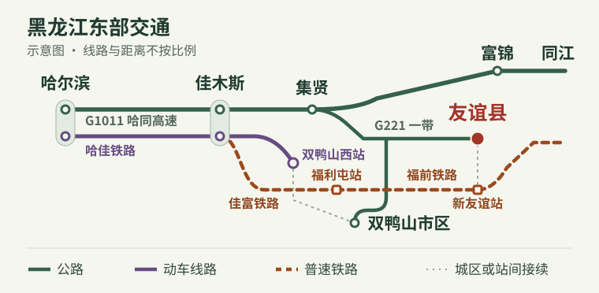
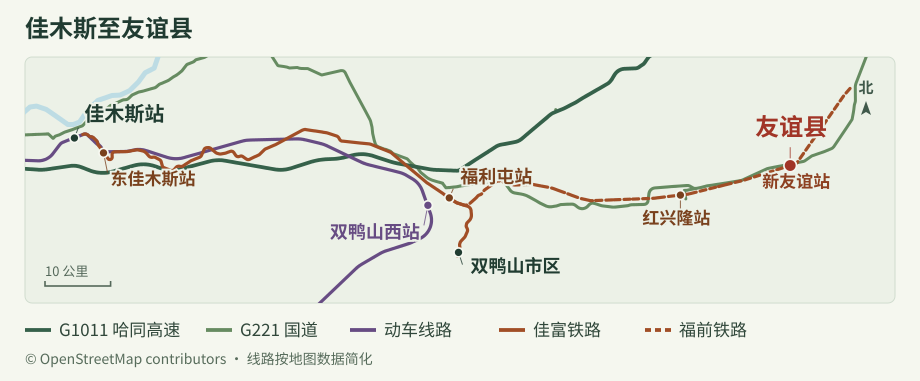

佳木斯至友谊近景

友谊县与双鸭山市
双鸭山市位于黑龙江省东北部，因市区北面的两座山峰形似卧鸭而得名。1956年5月25日，国务院批准双鸭山矿区改市，由黑龙江省管辖。1980年9月22日，市革命委员会改为市人民政府。煤炭工业是这座城市早期发展的支柱。
友谊县依友谊农场的经营范围设县，县政府驻友谊镇。北和东北与富锦相邻，东南与宝清以七星河为界，西接集贤，西南与双鸭山市辖区接壤。
双鸭山市旧辖区统计
全市面积约22,483平方公里，曾有12个国营农场、40个国营林场。
黑龙江省各地级行政区简介
- 哈尔滨市
- 黑龙江省省会，松花江穿过市区。中央大街上的老建筑和冬天的冰雪景观，是哈尔滨最有辨识度的城市风景。
- 齐齐哈尔市
- 位于嫩江沿岸，是黑龙江西部的中心城市。城郊的扎龙湿地是丹顶鹤的重要栖息地。
- 鸡西市
- 位于黑龙江东南部，曾因煤炭工业发展起来。辖区内的兴凯湖横跨中俄边界。
- 鹤岗市
- 位于黑龙江东北部，因煤炭开采发展起来。下辖萝北、绥滨两县，沿黑龙江分布着农田和湿地。
- 双鸭山市
- 黑龙江东部的煤炭工业城市，因两座形似卧鸭的山峰得名。友谊县是它下辖的农场县。
- 大庆市
- 地处松嫩平原。20世纪50年代末发现的大庆油田带动这里发展为石油工业城市。
- 伊春市
- 位于小兴安岭腹地。红松林和汤旺河沿岸的山林景观是这里的特色。
- 佳木斯市
- 位于松花江下游和三江平原，是黑龙江东部的交通枢纽。向东经集贤可到友谊。
- 七台河市
- 地处黑龙江东部，是一座因煤而兴的城市，也培养了多位短道速滑世界冠军。
- 牡丹江市
- 牡丹江流经市区，周边多山地。镜泊湖由火山熔岩阻塞河道形成，是当地有代表性的湖泊。
- 黑河市
- 市区位于黑龙江南岸，与俄罗斯布拉戈维申斯克隔江相望。辖区内还有五大连池火山地貌。
- 绥化市
- 位于松嫩平原东北部，以粮食生产为重要产业，大片耕地种植玉米、大豆和水稻。
- 大兴安岭地区
- 位于黑龙江省最北部，以大兴安岭森林为主体。下辖漠河市，北极村就在黑龙江畔。